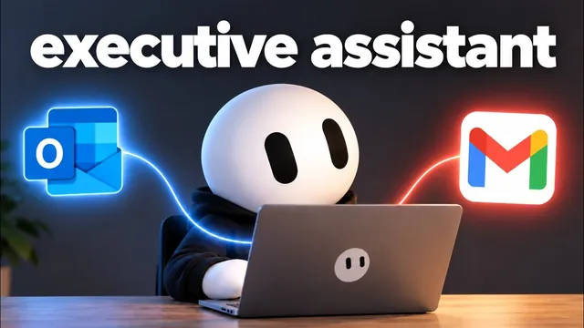

Grok Bot이 내 메일함을 관리한다 (성격까지 있음)

원본 영상 보기 →
- 자동화보다 분류 기준 설계가 먼저다
- 전용 이메일 주소는 봇을 '이벤트로 깨어나는 존재'로 만든다
- 노코드 자동화도 결국 약간의 코드가 필요한 지점이 있다
한 줄 요약
이메일을 자동으로 분류·정리해주는 AI봇과, 아예 자기만의 이메일 주소를 갖고 메일이 오면 스스로 깨어나 답장하는 AI봇을 그록봇(Grok Bot)으로 각각 만드는 전 과정을 실제 화면으로 보여주는 영상이다. 라우팅 규칙 설계부터 Agent Mail 연동, 웹훅 인증, 여러 인박스가 섞이지 않게 필터링하는 법까지 다룬다.
전체 내용 정리
이메일을 4~5개 카테고리로 자동 분류하는 봇 만들기
영상은 이미 운영 중인 사례로 문을 연다. GPT-6 Astra라는 AI가 종목을 조사해 매매 지시를 이메일로 보내면 트레이딩 봇이 실제 주문을 실행하는데, 이 봇은 정해진 시간이 아니라 이메일이 도착하는 순간(웹훅)에 깨어난다. 그리고 "Nat"이라는 또 다른 봇은 하루 두 번 받은편지함을 정리해준다. Nate는 이 두 가지를 처음부터 만드는 법을 이어서 보여주는데, 먼저 Nat부터 보면 실제로 걸린 시간은 몇 분이 안 됐다. 그록봇에서 새 봇을 만들고 "너는 내 이메일 관리 에이전트고 이름은 Natie야. 내 받은편지함을 깔끔하게 유지해줘"라고 역할을 지시한 뒤, 원하는 라벨 체계를 알려주는 것이 전부였다. 그는 primary(직접 소통 중인 메일), notifications(은행이나 구독 서비스 알림), outreach(협찬·제안 등 외부 연락), urgent(청구서 같은 긴급 건) 네 가지를 기준으로 제시했고, 봇이 스스로 "뉴스레터도 꽤 많이 받으시는데 카테고리에 추가할까요?"라고 제안해 다섯 번째 카테고리를 더했다. 그는 가장 중요한 첫 단계는 "메일이 도착했을 때 어떻게 분류할지 라우팅 규칙을 먼저 명확히 하는 것"이라고 강조했다. 이후 마켓플레이스에서 Gmail이나 Outlook 같은 실제 메일 계정을 연결하면 되고, 계정이 여러 개면 각각 라벨을 붙여 전부 연결할 수 있다.
하루 두 번 정리 결과를 알림으로 받기
계정 연결이 끝나면 이 봇이 언제, 어떻게 작동할지를 정한다. Nate는 오전 6시 45분과 오후 6시 45분, 하루 두 번 받은편지함을 정리하도록 설정했고, 작업이 끝나면 ClickUp 다이렉트 메시지로 급한 메일이 뭔지 요약해서 보내달라고 요청했다. 메시지 맨 아래에는 "sent by Nat"이라는 서명도 자동으로 붙게 했다. 이 봇은 답장 초안을 써주지는 않고, 오직 라벨을 붙이고 긴급 건을 빨간색으로 표시하는 역할만 한다. Nate는 이 세팅 전체가 5~10분이면 끝날 만큼 간단하다고 설명했다.
봇에게 자기만의 이메일 주소 주기 — Agent Mail 연동
두 번째로 보여준 건 더 진전된 형태로, 봇이 사람처럼 자기 이메일 계정을 갖고 그 계정으로 메일을 받고 보내는 구조다. 이를 위해 Agent Mail이라는 무료로 시작할 수 있는 서비스를 썼는데, 대시보드에서 봇이 보내고 받은 메일량 같은 전송 통계를 바로 확인할 수 있다. Nate는 인박스 메뉴에서 새 인박스를 만들었는데, 무료 요금제라 생성 개수에 제한이 있었고(이번이 마지막으로 만들 수 있는 하나였다), 사용자 이름을 "YouTube"로 하려다 이미 쓰이고 있어 "YouTube test"로 바꿔 agentmail.to 기본 도메인으로 인박스를 만들었다. 이렇게 만든 인박스는 Agent Mail 화면에서 실제 메일함처럼 열람하고 답장할 수도 있다. 이 계정을 그록봇과 연결하려면 마켓플레이스에서 Agent Mail 커넥터를 추가하고 계정 인증(로그인 후 권한 허용)을 거치면 된다.
메일이 오면 스스로 깨어나는 봇 만들기 — 웹훅 설정
Agent Mail 연결이 끝나면 "Stephanie"라는 새 봇을 만들고, 이 봇이 메일을 받을 때마다 자동으로 깨어나도록 루틴을 웹훅 방식으로 설정한다. 웹훅은 간단히 말해 한 앱에서 특정 사건(여기서는 새 메일 도착)이 생겼을 때 다른 앱에 자동으로 신호를 보내는 방식이다. 루틴을 만들고 나면 그록봇 쪽에서 웹훅 주소와 인증키를 확인할 수 있는데(촬영 중 이 화면이 한동안 표시되지 않는 버그가 있었고, 데스크톱 앱을 업데이트하고 나서야 정상적으로 나타났다), 이 주소와 키를 Agent Mail의 웹훅 설정 화면에 그대로 입력해야 한다. Agent Mail에서 새 엔드포인트를 추가하면서 그록봇에서 복사한 URL을 붙여넣고, 구독할 이벤트로는 "메시지 수신"만 체크했다. 인증을 위해 고급 설정의 커스텀 헤더에 이름은 "Authorization", 값은 "Bearer (한 칸 띄우고) 발급받은 키" 형식으로 직접 입력해서 저장했다. Nate는 이 웹훅 주소와 인증키를 API 키나 비밀번호처럼 절대 남에게 노출하면 안 된다고 따로 경고했는데, 이 두 정보만 있으면 누구든 해당 그록봇을 마음대로 조작할 수 있기 때문이다.
인박스가 여러 개일 때 서로 안 섞이게 필터링하기
문제는 그가 이미 트레이딩용 봇("Trader")과 인박스 하나를 쓰고 있었고, 이번에 만든 "YouTube test" 인박스와 웹훅까지 더해지면서 두 봇이 서로 상관없는 인박스의 메일에도 반응할 수 있게 된 것이다. 봇에게 "이 인박스로 온 메일만 처리해"라고 지시문으로 필터링시키는 방법도 되긴 하지만 깔끔한 방식은 아니라고 그는 지적했다. Agent Mail은 특정 인박스 ID로 웹훅을 한정하는 기능 자체는 있지만, 화면에 드롭다운 메뉴가 없어 코드로 직접 처리해야 한다. Nate는 이 상황을 AI 코딩 도구(Codex)에 설명해 자바스크립트 코드를 받았고, 이를 Agent Mail 웹훅의 "고급 > 변환(transformation) 편집" 화면에 붙여넣어 저장했다. 이렇게 하면 그 웹훅은 오직 지정한 인박스로 들어온 메일에만 반응하게 된다.
실제로 작동하는지 테스트하기
마지막으로 실제 이메일을 보내 확인했다. "받았으면 확인 답장 주고, 제일 좋아하는 농담도 하나 알려줘"라는 내용으로 메일을 보내자 "Stephanie" 봇이 곧바로 반응해 처리를 시작했고, 같은 시점에 "Trader" 봇 쪽은 아무 반응이 없었다. 이는 웹훅 연결 자체와 인박스 필터링이 둘 다 정상 작동했다는 뜻이었다. Stephanie는 답장 메일에서 수신을 확인하고 짧은 농담("과학자들이 원자를 못 믿는 이유는, 원자가 모든 걸 지어내기 때문이다")을 남겼으며, 스스로 판단해 앞으로도 그 주소로 온 메일만 처리하도록 자신의 루틴을 업데이트했다. Nate는 이렇게 봇마다 전용 이메일을 쥐여주면, 봇끼리는 물론 다른 자동화나 코딩 에이전트가 이메일로 서로에게 작업을 지시하는 구조까지 확장할 수 있다고 마무리했다.
핵심 인사이트
- 자동화보다 분류 기준 설계가 먼저다: 어떤 메일을 어떤 카테고리로 보낼지, 무엇을 긴급으로 표시할지를 먼저 명확히 정해야 봇이 헷갈리지 않는다. 이 기준이 흐릿하면 아무리 좋은 봇을 붙여도 결과가 지저분해진다.
- 전용 이메일 주소는 봇을 '이벤트로 깨어나는 존재'로 만든다: 정해진 시간마다 도는 자동화와 달리, 메일 수신이라는 사건이 생길 때만 작동하는 구조라 실시간성과 효율이 동시에 올라간다.
- 노코드 자동화도 결국 약간의 코드가 필요한 지점이 있다: 여러 인박스·여러 봇을 함께 쓰면 특정 인박스만 걸러내는 필터링처럼 화면 UI로는 안 되는 부분이 나오는데, 이때 AI 코딩 도구에게 그 상황만 설명하고 코드를 받아 붙여넣는 정도로 해결할 수 있다.
- 웹훅 주소·인증키는 비밀번호와 동급으로 취급해야 한다: 이 두 정보만 유출돼도 제3자가 봇을 마음대로 조작할 수 있으므로 화면 공유나 캡처에서 항상 가려야 한다.
오늘 당장 해볼 것
- 본인 또는 담당 직원의 이메일함을 primary·notifications(알림)·outreach(외부 제안)·urgent(긴급) 네 가지 기준으로 나눠보고, 이 기준을 자동화 담당 업체에게 전달해 "매일 아침저녁으로 이렇게 라벨링하고 급한 메일만 요약해서 카카오톡이나 슬랙으로 보내줄 수 있는지" 물어보기.
- Agent Mail(agentmail.to)처럼 AI 비서 전용 메일 주소를 발급해주는 서비스가 있다는 걸 알아두고, 고객 문의나 예약 확인처럼 반복적인 메일 응대를 맡길 전용 창구가 필요한지 검토해보기.
- 여러 자동화나 여러 담당자가 같은 메일함을 나눠 보고 있다면, 지금 그 구분이 사람이 매번 눈으로 걸러내는 방식인지 아니면 자동으로 필터링되는 방식인지 점검하고, 후자로 바꿀 수 있는지 자동화 업체에 문의해보기.